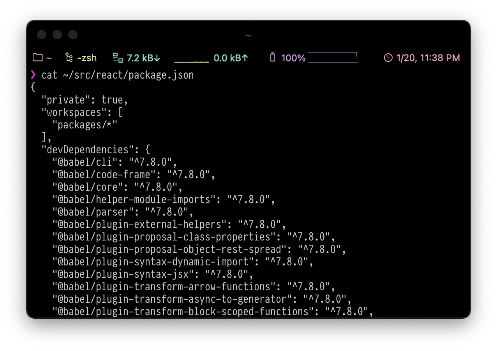
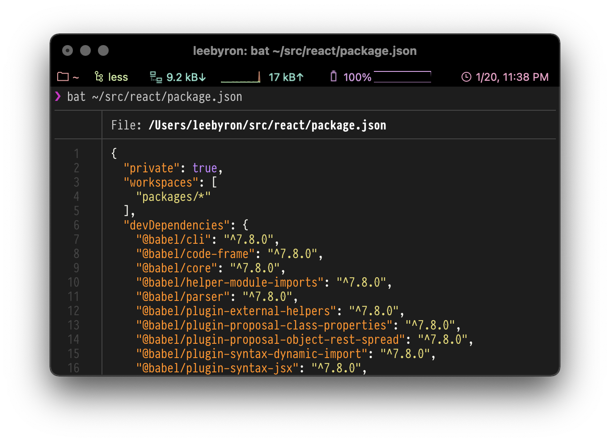

tilbat, a cat with wings
On macOS there is the fantastic “Preview” utility. Select a file and hit space bar to quickly take a look at the contents. In terminal things are a little different. There’s tail, cat, and less. Bash denizens will be familiar with the results.

Good luck if you try taking a look at a massive file, a file with long lines, or to get a quick read on some code. Maybe your habit is to open files in Vim or another editor so you can at least move around quickly and get some basic syntax highlighting.
There’s a better way…
Use bat, it’s just cat but with wings. It syntax highlights, it shows line numbers, it intelligently pipes to less (if it needs to), it even integrates with git to point out modified lines. It knows where its running and where its printing and falls back to the simple thing when you just need it to cat a file.

Learn more about bat at github.com/sharkdp/bat, and install with Homebrew:
brew install bat
One more thing. Combine bat with prettier as prettybat, or with man as batman, a few of many bonus tools that comes with bat-extras.